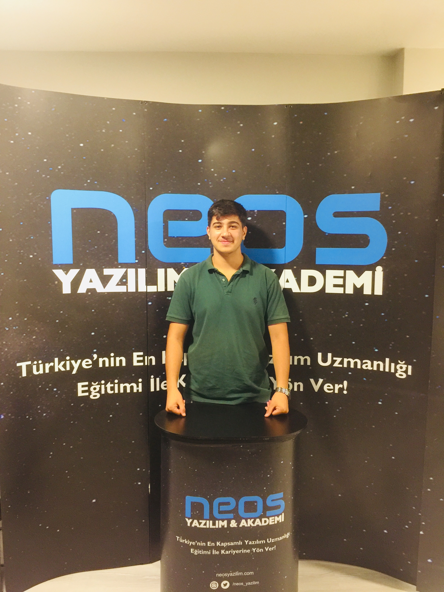

Muhammed Ali Küçük
Web Developer
-
Web Developer
Merhaba,
Ben Muhammed Ali Küçük, yazılıma olan merakım ve tutkum sayesinde kendi dijital dünyamı yaratmaya adım attım. Bu heyecan verici yolculukta kendimi sürekli geliştiriyor, öğreniyor ve yeni teknolojilere adapte oluyorum. Sizleri kısaca bu tutku dolu yolculuğuma davet etmek istiyorum.
Bilgisayarlar ve kodlar benim için sadece araçlar değil, aynı zamanda yaratıcılığımı ifade etmenin ve gerçek dünyadaki sorunlara çözüm bulmanın bir yoludur. Teknolojinin gücünü kullanarak kullanıcı deneyimini geliştirmek, kullanıcıların hayatlarını kolaylaştırmak ve yeni fikirleri hayata geçirmek benim için büyük bir ilham kaynağıdır.
Yazılım dünyasının sürekli değişen ve gelişen doğası beni daima heyecanlandırıyor. Öğrenmeyi ve kendimi geliştirmeyi seviyorum çünkü her yeni bilgi ve deneyim, daha iyi ürünler ve çözümler oluşturmama yardımcı oluyor. Kendi projelerimde ve işbirliklerimde, takım arkadaşlarımla birlikte çalışarak sorunları çözüme kavuşturmanın ve yenilikçi çözümler üretmenin keyfini çıkarıyorum.
Bu portfolyo sitesi, hem benim çalışmalarımı sergilemek hem de benimle iletişime geçmek isteyenlerle bağlantı kurmak için bir platform sağlıyor. Projelerimdeki özen, detay ve tasarım anlayışım, yazılım dünyasına olan bağlılığımı yansıtıyor.
Eğer siz de benimle birlikte teknolojinin sınırlarını zorlamak, yaratıcı çözümler üretmek ve dijital dünyada iz bırakmak isterseniz, iletişime geçmekten çekinmeyin. Birlikte çalışmak ve yeni projelerde bir araya gelmek için sabırsızlanıyorum.
-
